erro da previsão do Guaíba para daqui a 6 h, comparado com a regra simples
4–6 h
de antecedência do alerta, antes de o rio chegar à cota
0,1%
das famílias mandadas a abrigo lotado ou alagado, contra 15,9% indo ao mais próximo
418
testes automatizados passando: 278 de unidade, 116 do app e 24 de integração
Os rios, a chuva e a ocupação dos abrigos são simulados. O Abriga é um protótipo acadêmico e não é um canal oficial:
em emergência real, ligue 199 (Defesa Civil) ou 193 (Bombeiros).
Onde está cada item do edital
As 4 áreas resolvem o mesmo problema e estão integradas: os sensores alimentam o pipeline, a IA lê a camada gold, o app fala com a IA e o Power BI lê os CSVs da camada gold.
Na cheia, o morador descobre que o rio subiu quando a água já está na rua. E o abrigo mais perto pode estar
lotado ou dentro da área que vai alagar. A enchente de maio de 2024 em Porto Alegre mostrou os dois problemas:
aviso tarde e gente mandada para o lugar errado.
Quem
O que precisa saber
O que o Abriga entrega
Morador de bairro de risco (ex.: Navegantes, Sarandi)
Se precisa sair agora e para onde ir
Alerta em linguagem simples no app e os 3 abrigos aptos mais perto, com o tempo a pé e o caminho
Defesa Civil
Qual rio vai passar da cota e quando
Previsão do nível em 6 h por estação e alerta antecipado automático (o vigia)
Gestor de abrigo
Quantas vagas restam e quanta gente está chegando
Ocupação em tempo real, vagas e minutos até lotar
Gestão pública
Onde e quando as cheias acontecem
Dashboard no Power BI com o histórico de níveis, alertas e lotação
2. A solução
A funcionalidade central é "onde ficar seguro": um abrigo que vai ter vaga quando a pessoa chegar
e que não fica numa área que o rio deve alagar nas próximas 6 horas.
Sensores de nível do rio, chuva e ocupação dos abrigos publicam leituras por MQTT (26 simulados e um ESP32 no Wokwi).
O pipeline valida cada leitura e guarda em três camadas no PostgreSQL: bronze (tudo o que chegou), silver (dado tratado) e gold (visões para decidir).
A IA prevê o nível de cada rio para daqui a 6 h, abre o alerta antes da cota, escolhe os abrigos seguros e escreve o alerta em linguagem simples.
O app avisa o cidadão, mostra os rios e leva a pessoa ao abrigo, sem enviar a posição dela ao servidor.
O Power BI mostra o histórico para a gestão pública decidir onde agir.
Tecnologias
Área
Tecnologias
IA e automação
Python 3.14, scikit-learn (random forest e regressão linear), FastAPI
Big Data
PostgreSQL 18 (bronze/silver/gold), data lake em arquivos NDJSON, Power BI com DAX
MVP e IoT
React Native com Expo (exportado para a web), MQTT (Mosquitto 2), ESP32 no Wokwi, simulador em Python
DevOps
Git e GitHub, Docker Compose, GitHub Actions, GitHub Container Registry, pytest, Jest, ruff, ESLint
Ecossistema
Cidadão (recebe o alerta e escolhe o abrigo), Defesa Civil (acompanha os rios e dispara os alertas),
gestores dos abrigos (escolas e ginásios), Prefeitura (planejamento com o dashboard) e operadores de sensores.
Simples, segura e inclusiva. O alerta usa frases curtas, sem jargão, com a ação primeiro.
O app não tem login nem cadastro e a localização fica só no celular (LGPD). Se a conexão cair, ele continua mostrando os últimos dados com a hora.
A IA também escreve a versão em SMS (sem acento, até 160 caracteres), que chega a qualquer celular quando o envio for ligado.
3. Impacto e ODS
O Abriga contribui para três Objetivos de Desenvolvimento Sustentável da ONU (Agenda 2030).
ODS e meta
Como o Abriga contribui
Como medimos
ODS 11 — Cidades e comunidades sustentáveis Meta 11.5: reduzir as mortes e o número de pessoas afetadas por desastres, inclusive os ligados à água, protegendo quem está em situação vulnerável.
Manda a família para um abrigo que vai ter vaga quando ela chegar e que fica fora da área que deve alagar. Os bairros de risco são os atingidos em maio de 2024.
Famílias que chegariam a um abrigo lotado ou alagado: 15,9% indo ao mais próximo, 0,1% com a IA (46.200 escolhas conferidas no histórico).
ODS 13 — Ação contra a mudança global do clima Meta 13.1: resiliência a riscos do clima. Meta 13.3: capacidade de alerta precoce.
Prevê o nível dos rios para daqui a 6 h e abre o alerta antes de o rio chegar à cota, para a pessoa sair de casa com tempo.
Antecedência do alerta: 4 a 5 h no Guaíba e 6 h no Gravataí. A regra simples só avisa quando o rio já passou da cota (0 h).
ODS 3 — Saúde e bem-estar Meta 3.d: alerta precoce e gestão de riscos à saúde.
Alerta em linguagem simples, com a ação primeiro ("Saia agora para um lugar alto"), um cuidado prático ("Não atravesse ruas alagadas") e os telefones 199 e 193.
Todas as combinações de situação, abrigo e bairro passam na verificação automática de linguagem simples (caso de teste CT-34).
Como o impacto é medido
Erro da previsão contra a regra simples ("daqui a 6 h o rio estará igual"), em 30 dias que a IA nunca viu.
Antecedência do alerta: há quantas horas a previsão já avisava quando o rio passou da cota.
Abrigo certo: 200 pontos de partida nos bairros de risco × 231 horas de crise, conferindo o que aconteceu depois.
Qualidade do dado: mensagens rejeitadas e leituras suspeitas, auditadas no bronze e fora das decisões.
Como ampliar
Outras cidades: só precisam das cotas das estações, do cadastro de abrigos e dos bairros (arquivos em area2-bigdata/db/seeds/).
Sensores reais: entram no lugar do simulador publicando no mesmo contrato MQTT, com a mesma validação.
Mais canais: as mensagens já saem prontas para SMS, push e WhatsApp, e o envio pode ser ligado aos canais da Defesa Civil.
4. Arquitetura geral
Tudo dentro do quadro "docker compose" sobe com um comando e roda sem internet. Fonte do diagrama: docs/arquitetura.md.
Carregando o diagrama…
Duas entradas, mesmas regras. O tempo real (MQTT) e o lote (arquivos NDJSON do data lake) chamam a mesma função processar(), então nenhum dado entra por um caminho mais frouxo.
Áreas integradas. Os sensores alimentam o pipeline. A IA e o Power BI leem só a camada gold, cada um com um usuário que só lê. O app só fala com a API.
Privacidade. O servidor só recebe o bairro. Com o GPS, o app calcula a distância no aparelho com a mesma regra da IA, conferida por um teste de paridade.
5. Área 1 — IA e automação
Edital: IA aplicada (1,5) · prompts, agentes ou automação documentados (1) · demonstração com entrada e saída (0,5) · lógica e ganho com métrica antes e depois (1).
5.1 IA aplicada
Peça
O que faz
Como funciona
Previsão do nível em 6 h
Diz o nível de cada rio daqui a 6 horas e a situação prevista (normal, atenção, alerta ou inundação).
Aprendizado supervisionado com nível atual, variação da última hora e chuva de 1, 6 e 24 h. Para cada rio, a validação cruzada escolhe entre regra simples, regressão linear e random forest.
Onde ficar seguro
Os 3 abrigos aptos mais perto e os que foram evitados, com o motivo.
Descarta o abrigo sem vaga na chegada (pelo ritmo de chegada da última hora) e o que fica em área de risco de um rio em alerta agora ou previsto para 6 h.
Vigia (agente de alerta)
Abre, escala e fecha o alerta antecipado de cada rio sozinho.
A cada 2 s repete a previsão e aplica a mesma regra de alerta do pipeline ao pior entre o nível de agora e o previsto.
Mensagens
Escreve o alerta para SMS, push, WhatsApp e um resumo técnico.
Modelos de texto que seguem um prompt de sistema documentado, com verificação automática das regras.
O treino usa 24 meses simulados com outras sementes e acontece no build da imagem. O teste usa os 30 dias que passaram pelo pipeline, que o modelo nunca viu.
5.2 Prompts e automação
O projeto não chama uma API de LLM, porque o avaliador não teria a chave e a área precisa rodar só com o README.
A IA generativa é simulada por modelos de texto (area1-ia/ia/mensagens.py) que seguem exatamente o prompt abaixo.
Ele é ao mesmo tempo a especificação do gerador e o prompt que iria para um LLM. Para trocar o gerador, basta mudar a função gerar():
a entrada, a saída e a verificação continuam as mesmas.
fatos (JSON: previsão + recomendação) ──► [prompt de sistema] + [exemplos] ──► gerador (modelos de texto ou LLM)
──► mensagens por canal (JSON) ──► verificação automática (verificar()) ──► envio
Prompt de sistema (area1-ia/prompts/sistema.md)
Você é o redator de alertas da Defesa Civil de Porto Alegre. Você recebe FATOS em JSON
sobre um rio (nível de agora, nível previsto para daqui a 6 horas, situação de agora e
prevista) e, às vezes, um abrigo recomendado e o bairro da pessoa. Escreva o alerta para
cada canal, em português do Brasil, em LINGUAGEM SIMPLES.
INTENÇÃO (pela situação mais grave entre agora e a prevista):
- 1 atenção → "Fique atento."
- 2 alerta → "Prepare-se para sair de casa."
- 3 inundação → "Saia agora para um lugar alto."
- Se a prevista é MENOS grave que a de agora (o rio está baixando): depois de inundação
(quem saiu de casa) → "Não volte para casa ainda."; depois de alerta ou atenção →
"Fique atento."
- Situação 0 nos dois → não escreva mensagem para o cidadão (só o resumo técnico).
REGRAS PARA O CIDADÃO:
1. Comece pela AÇÃO (o que a pessoa deve fazer), antes de qualquer explicação.
2. Frases curtas: no máximo 20 palavras cada.
3. Sem jargão técnico. Nunca use: cota, persistência, modelo, algoritmo, severidade,
probabilidade, hidrológico, regressão, random forest. (Nomes próprios vindos dos fatos,
como "Escola Modelo", não contam.)
4. Se a previsão é pior que o agora, fale no futuro e diga o prazo:
"deve alagar ruas nas próximas 6 horas". Se já está acontecendo, fale no presente.
5. Alerta ou inundação (e o rio não está baixando):
- diga para onde ir. SMS e push: "Vá para <abrigo> (<minutos> min a pé)". WhatsApp, em
duas frases curtas: "Vá para <abrigo>. Fica a <minutos> min a pé e tem <vagas> vagas."
Sem abrigo nos fatos: "Procure o abrigo mais perto no app";
- inclua o telefone de emergência: 199 (Defesa Civil) ou 193 (Bombeiros).
6. Termine com um cuidado prático: atenção → "Evite as margens e acompanhe os avisos";
alerta → "Separe documentos, remédios e água"; inundação → "Não atravesse ruas
alagadas". Baixando: depois de inundação → "Espere a Defesa Civil liberar a volta";
depois de alerta → "Mantenha documentos e remédios à mão"; depois de atenção → "Evite
as margens até o rio voltar ao normal".
7. Nunca invente números, abrigos ou bairros que não estejam nos fatos.
CANAIS (responda só com este JSON):
{
"sms": até 160 caracteres, SEM acentos (padrão GSM), começa com "DEFESA CIVIL:".
Se não couber, encurte o nome do abrigo com "..." (nunca tire o telefone);
"push_titulo": até 50 caracteres;
"push_corpo": até 178 caracteres;
"whatsapp": até 700 caracteres, com a ação em *negrito* e uma ideia por linha;
"defesa_civil": resumo técnico, até 700 caracteres, com o rótulo [ALERTA ANTECIPADO],
[ALERTA EM CURSO], [RIO BAIXANDO] ou [NORMAL], os níveis com vírgula
decimal, a cota, a variação prevista e, se houver nos fatos, o erro
médio da IA comparado com o da regra simples.
}
O prompt escreve as mensagens que a Defesa Civil enviaria numa operação real. No protótipo elas aparecem só na API e no app, que nunca usa "Defesa Civil" como remetente (caso CT-66).
Regras de automação
Automação
Regra
Vigia (area1-ia/ia/vigia.py)
A cada 2 s prevê o nível de cada rio. Abre o alerta antecipado quando o nível previsto passa da cota, escala quando piora e fecha só quando o rio e a previsão estão 0,10 m abaixo da cota, para não ficar abrindo e fechando. Dado velho ou incompleto não decide.
Verificação das mensagens
Confere o tamanho de cada canal, o SMS sem acento e com o telefone, as palavras proibidas e o tamanho das frases. Um texto que quebre uma regra aparece em verificacao com o problema.
Escolha do modelo
A regra simples também concorre no treino. A IA só substitui a regra onde provou ser melhor; por isso o Arroio Dilúvio, que sobe rápido demais, fica com a regra simples.
5.3 Demonstração com entrada e saída
Momento real do histórico do pipeline: 28/10 03h (horário de Brasília), Guaíba no Cais Mauá. Saída de python -m ia.relatorio (area1-ia/relatorio/demo.md).
GET /abrigos/recomendacao?bairro=navegantes&pessoas=4
Estratégia
Abrigo
O que aconteceu
Mais próximo
Colégio Cândido José de Godoi (1,0 km)
alagou nas 6 h seguintes
IA
Colégio Dom João Becker (3,1 km, 61 min a pé)
seguro, com vaga
Evitado: o Colégio Cândido José de Godoi fica em área de risco e o rio da região está em alerta.
Mensagem de alerta (POST /mensagens/gerar, trecho da saída)
"sms": "DEFESA CIVIL: Saia agora para um lugar alto. O Lago Guaiba deve alagar ruas em ate 6 h.
Va para Colegio Dom Joao Becker (61 min a pe). Emergencia: 199 ou 193."
"push_titulo": "Saia agora: risco de alagamento"
"whatsapp": "*Saia agora para um lugar alto.* O Lago Guaíba deve alagar ruas no bairro Navegantes nas
próximas 6 horas. Vá para Colégio Dom João Becker. Fica a 61 min a pé e tem 47 vagas.
Não atravesse ruas alagadas. Emergência: 199 (Defesa Civil) ou 193 (Bombeiros)."
"defesa_civil": "[ALERTA ANTECIPADO] Guaíba - Cais Mauá: 2,47 m agora (atenção). Previsão para 6 h: 3,09 m
(inundação; cota 3,00 m), variação +0,62 m. Erro médio da IA no teste: 0,022 m (regra simples: 0,075 m)."
"verificacao": { "sms": [], "push_titulo": [], "push_corpo": [], "whatsapp": [], "defesa_civil": [] }
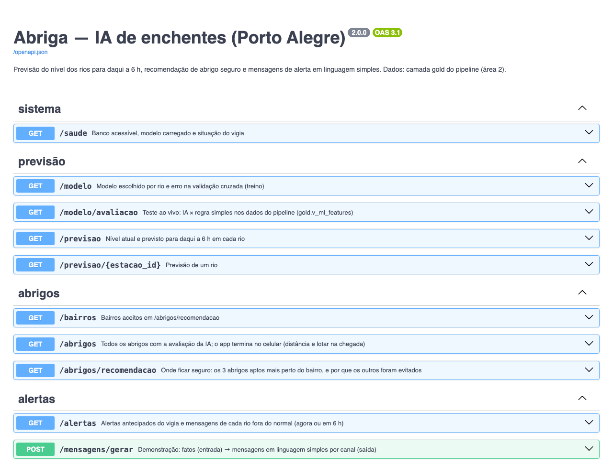
A API de IA no ar (localhost:8000/docs): previsão, abrigos, alertas e mensagens. Todas as rotas podem ser testadas no navegador.
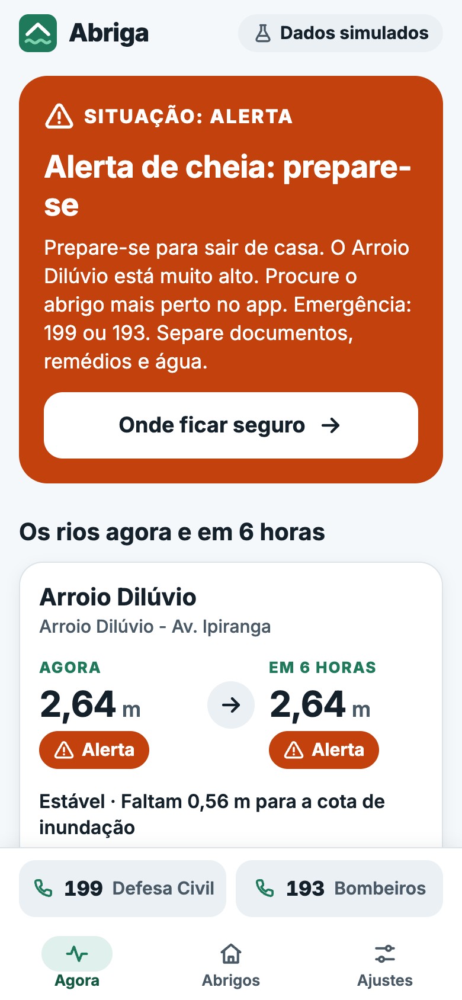
O app mostra a previsão da IA e o selo "Alerta antecipado" antes de o rio chegar à cota.
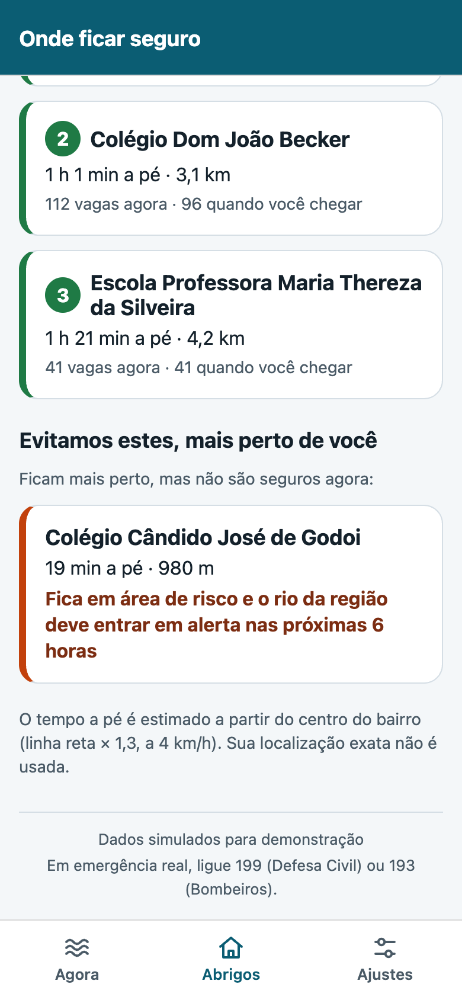
A IA explica por que evitou o abrigo mais perto.
5.4 Lógica e ganho: antes × depois
Antes: a regra simples, "daqui a 6 h o nível é igual ao de agora", e ir ao abrigo mais próximo. Depois: a IA.
Teste nos 30 dias do pipeline (720 horas por rio), que o modelo nunca viu. Fonte: area1-ia/relatorio/RELATORIO.md.
Rio
Modelo escolhido
Erro médio IA
Erro médio regra simples
Erro caiu
Guaíba - Cais Mauá
random forest
0,022 m
0,075 m
70,7%
Rio Gravataí - Sarandi
random forest
0,037 m
0,094 m
60,6%
Arroio Dilúvio - Av. Ipiranga
regra simples
0,232 m
0,232 m
0%
Rio e cota
Vezes que passou
Antecedência da IA
Regra simples
Alarmes falsos da IA
Guaíba · alerta (2,50 m)
2
4 h e 5 h
0 h
0
Guaíba · inundação (3,00 m)
1
5 h
0 h
1
Gravataí · alerta (3,50 m)
1
6 h
0 h
2
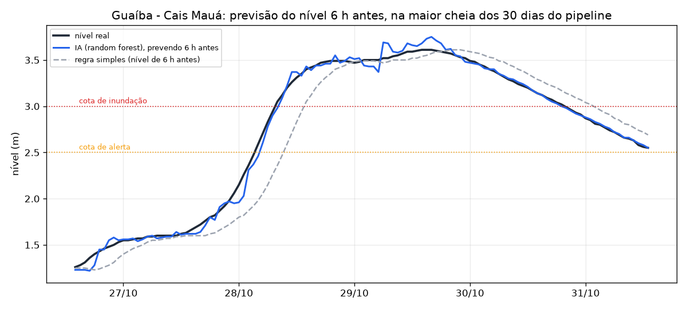
Guaíba: cada ponto da previsão foi calculado 6 h antes, só com o nível e a chuva até ali.
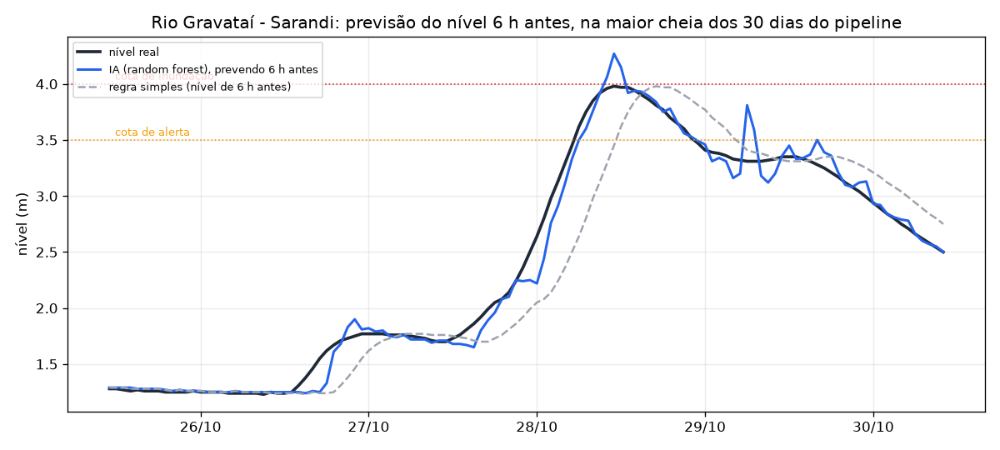
Gravataí: a previsão acompanha a cheia antes de ela chegar.
Onde ficar seguro: 46.200 escolhas conferidas com o que aconteceu depois
Estratégia
Lotado na chegada
Abrigo alagou
Falha
Tempo a pé médio
A. Mais próximo (sem o sistema)
5,2%
11,2%
15,9%
24 min
B. Regra só com o agora (vaga e alerta atuais)
0,3%
0,2%
0,5%
37 min
C. IA (vaga na chegada e risco previsto)
0,1%
0,0%
0,1%
38 min
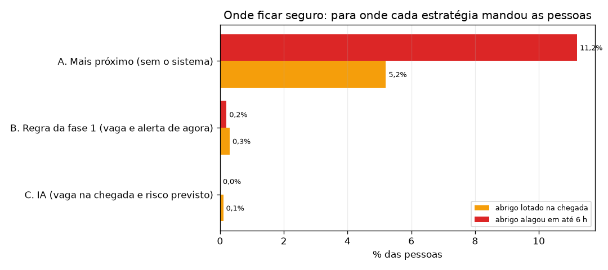
Falha por estratégia: abrigo lotado na chegada ou que alagou.
Leitura. Sem o sistema, 15,9% das famílias iriam para um abrigo lotado ou que alagou.
Olhando só o agora, cai para 0,5%. A IA, que olha a vaga na chegada e o rio previsto para 6 h, chega a 0,1%.
O custo é andar em média 14 min a mais que até o abrigo mais próximo.
Ao vivo no app (caso CT-62): o vigia avisou a atenção do Guaíba 50 s antes de o rio chegar à cota, cerca de 8 h simuladas, e o alerta 31 s antes, cerca de 5 h.
6. Área 2 — Big Data e visualização
Edital: estrutura dos dados (1) · ingestão e processamento (1) · dashboard com 3+ indicadores e filtros (1,5) · funções analíticas como DAX (0,5).
6.1 Estrutura dos dados
Arquitetura em camadas (medalhão) no PostgreSQL 18, com um data lake de arquivos na entrada do lote. Todos os horários ficam em UTC; o horário de Brasília aparece só no gold.
Camada
O que guarda
Tabelas e visões
Landing (data lake)
Arquivos NDJSON do histórico, como chegaram
datalake/landing/*.ndjson
Bronze
Toda mensagem recebida, inclusive JSON inválido, com o status e o motivo. Reentregas idênticas são barradas pelo hash.
bronze.mensagem, bronze.carga
Silver
Leituras validadas, alertas e cadastros. Leitura com salto impossível fica marcada como suspeita.
Cadastros: 94 bairros e 20 escolas e ginásios reais do OpenStreetMap (mais 1 abrigo de demonstração), 4 estações e 29 sensores, além de 1 estação, 1 abrigo e 3 sensores só para os testes de integração. As migrações (area2-bigdata/db/migrations/) rodam a cada subida, são idempotentes e param com erro se uma já aplicada for editada.
6.2 Ingestão e processamento
Caminho
Entrada
Uso
Tempo real
MQTT, uma mensagem por leitura (QoS 1)
Situação atual, alertas e app
Lote
30 dias de histórico, cerca de 112 mil leituras em NDJSON
Série histórica, dashboard e teste da IA
As duas entradas passam pela mesma função processar():
grava a mensagem bruta no bronze;
valida o schema, o tópico, se o sensor está cadastrado e com a origem certa, a unidade, a faixa de valor e o horário (o que falha fica no bronze como rejeitado, com o motivo);
grava no silver e marca como suspeita a leitura com salto impossível;
se for nível de rio, abre, escala ou fecha o alerta da estação.
No ambiente de demonstração em 09/11/2026 (no ar há cerca de 46 h)
Indicador
Valor
Leituras aceitas (bronze → silver)
2.466.322
Mensagens rejeitadas, auditadas no bronze com o motivo
2.245
Leituras suspeitas (fora das visões gold)
277
Alertas abertos e fechados pelo pipeline
502
6.3 Dashboard (Power BI)
O Power BI lê os CSVs exportados da camada gold pelo usuário bi_ro, que só lê o gold
(docker compose --profile ferramentas run --rm exportar). O passo a passo está em area2-bigdata/powerbi/README.md.
Nível dos rios contra as cotas, chuva × nível e alertas, com filtro de estação e período.Ocupação e vagas dos abrigos, com filtro de bairro e área de risco.
#
Indicador
Visual
Decisão que ele apoia
1
Nível do rio contra as cotas
Linha no tempo com as cotas de atenção, alerta e inundação
Quando emitir alerta e evacuar cada região
2
Ocupação e vagas dos abrigos
Barras por abrigo e mapa
Para onde encaminhar as pessoas e quando abrir abrigos novos
3
Chuva acumulada × nível
Colunas de chuva e linha de nível
Mostra o atraso entre a chuva e a cheia, base da previsão
4
Alertas por estação e severidade
Tabela e cartões
Quantas horas cada região passou em risco
5
Qualidade dos dados
Rosca por status e motivo
Confiança nos sensores
Filtros: estação, bairro, período, tipo de abrigo, abrigo em área de risco e severidade do alerta.
6.4 Funções analíticas (DAX)
Medidas DAX aplicadas aos indicadores.
Nível Máx (m) = MAX ( v_estacao_horaria[nivel_max_m] )
Chuva Total (mm) = SUM ( v_estacao_horaria[chuva_mm] )
Horas em Alerta = CALCULATE ( COUNTROWS ( v_estacao_horaria ),
v_estacao_horaria[situacao] IN { "alerta", "inundacao" } )
% Tempo em Alerta = DIVIDE ( [Horas em Alerta], COUNTROWS ( v_estacao_horaria ) )
Folga até a Cota de Inundação (m) = MAX ( dim_estacao[cota_inundacao_m] ) - [Nível Máx (m)]
Lotação Máx (%) = MAX ( v_abrigo_horaria[pct_lotacao_max] )
Pessoas Abrigadas (pico) = MAXX ( VALUES ( v_abrigo_horaria[hora_local] ),
CALCULATE ( SUM ( v_abrigo_horaria[ocupacao_max] ) ) )
Vagas Recomendáveis Agora = CALCULATE ( SUM ( v_abrigo_status[vagas] ),
v_abrigo_status[recomendavel] = "true" )
Qtde Alertas = COUNTROWS ( v_alertas )
Duração Média do Alerta (h) = AVERAGE ( v_alertas[duracao_h] )
Taxa de Rejeição (%) = DIVIDE (
CALCULATE ( SUM ( v_qualidade[mensagens] ), v_qualidade[status] = "rejeitada" ),
SUM ( v_qualidade[mensagens] ) )
7. Área 3 — MVP, IoT e experiência digital
Edital: protótipo com 4+ telas (1) · IoT com 2+ sensores (1) · fluxo funcional do início ao fim (1) · diagrama da arquitetura (1, na seção 4).
7.1 Protótipo: app Abriga com 5 telas
React Native com Expo. O mesmo código roda no celular e no navegador; a entrega usa a versão web,
servida pelo Docker em localhost:5173. A atualização é automática: rios e alertas a cada 3 s, abrigos a cada 5 s.
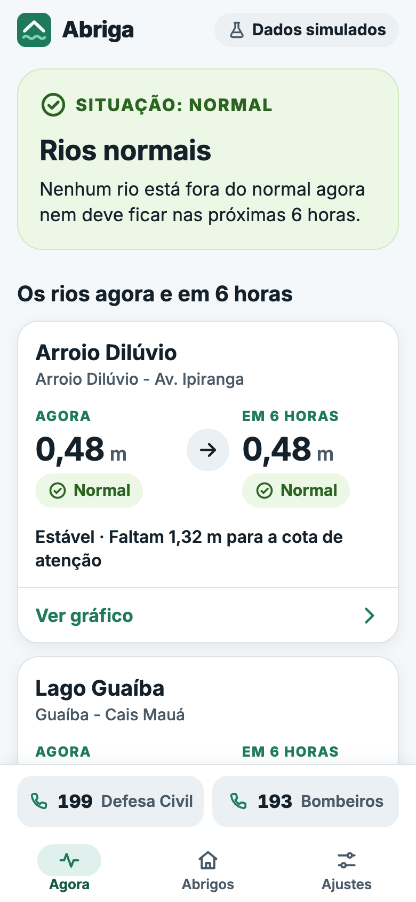
Agora: a pior situação entre os rios, agora ou em 6 h, em linguagem simples.
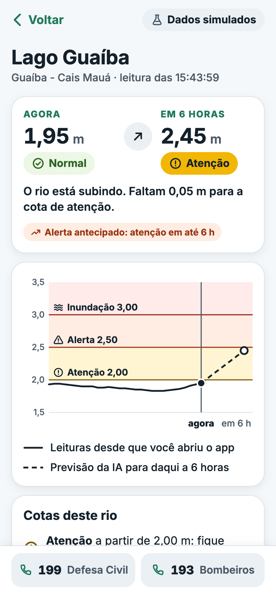
Rio: gráfico com as cotas, as leituras e a previsão de 6 h.
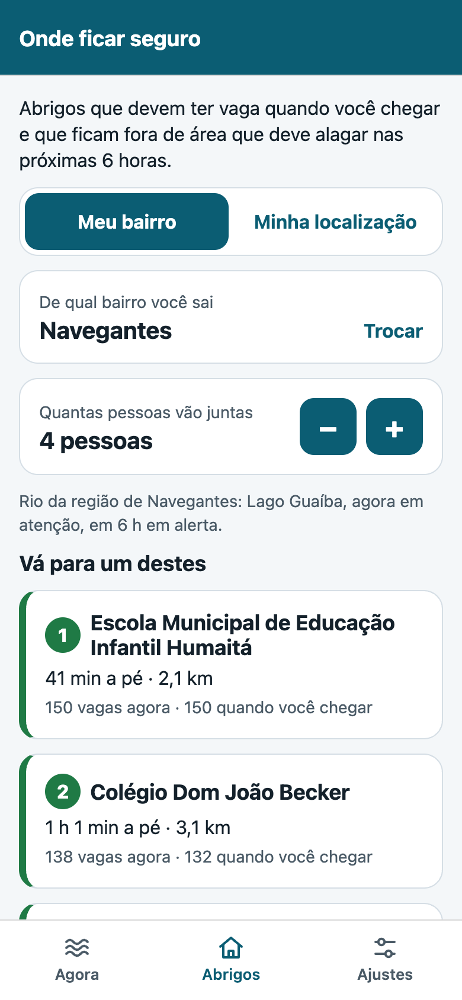
Onde ficar seguro: os 3 abrigos recomendados, com tempo a pé e vagas na chegada.
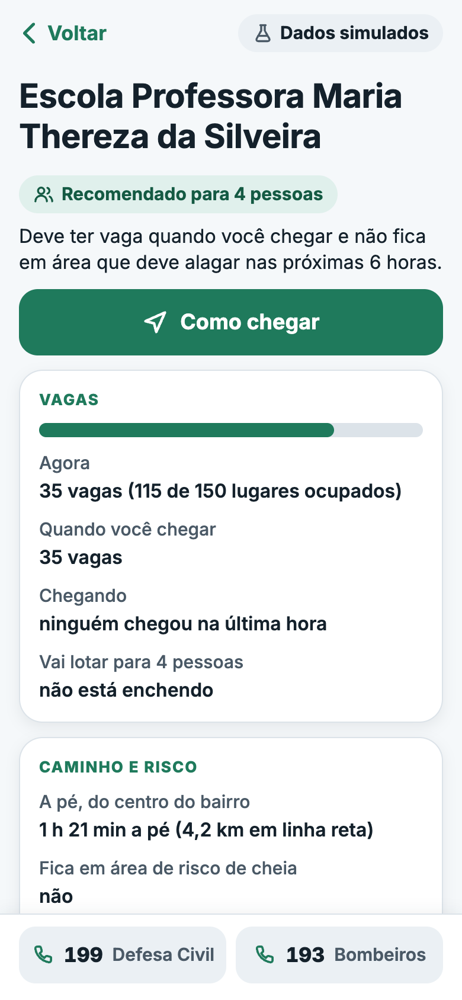
Detalhe do abrigo: ocupação, em quanto tempo lota, risco e "Como chegar".
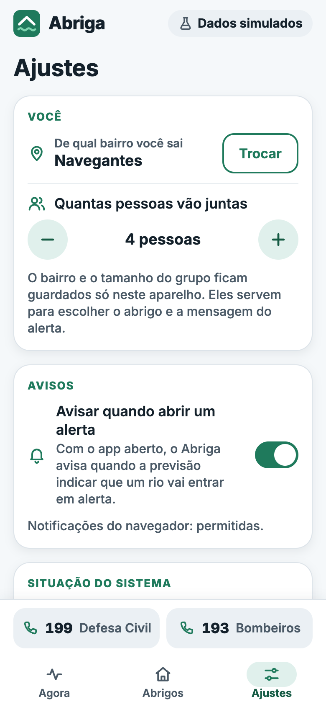
Ajustes: bairro, tamanho do grupo, avisos e situação do servidor.
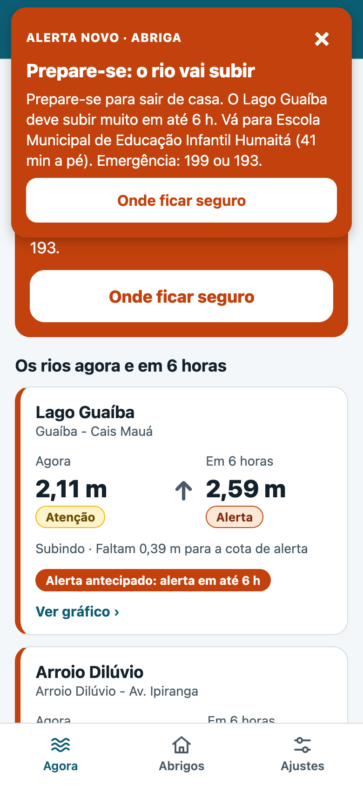
Aviso de alerta novo: faixa no topo e notificação, uma vez por alerta.Na cheia: selo "Alerta antecipado" e a ação para o bairro salvo.
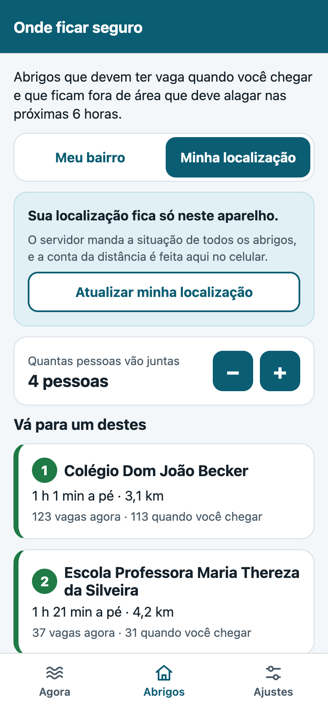
"Minha localização": a distância é calculada no aparelho.Os abrigos evitados aparecem com o motivo.
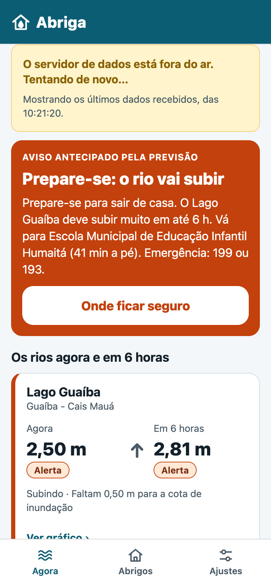
Sem servidor: aviso amigável e os últimos dados, sem tela branca.
7.2 IoT: 29 sensores
Origem
Sensores
Como publica
Simulador Python (area3-mvp/iot/simuladores/)
3 estações com nível do rio e chuva (6 sensores) e a ocupação de 20 abrigos (20 sensores)
MQTT no Mosquitto local, com usuário, senha e permissão por tópico
ESP32 no Wokwi (area3-mvp/iot/esp32_wokwi/)
Ultrassônico HC-SR04 (nível), potenciômetro (chuva), PIR com botão (ocupação) e LED de alerta local
MQTT num broker público; uma ponte valida a assinatura HMAC e traz para o broker local
O simulador tem física de verdade: a chuva segue uma cadeia de Markov e o rio sobe com atraso (rápido no Dilúvio, lento no Guaíba),
o que torna a cheia previsível para a IA. Ele também imita defeitos de sensor: 0,5% das leituras não chegam, 0,1% têm pico absurdo e 0,1% chegam corrompidas.
Circuito do ESP32 rodando no Wokwi. Testado de ponta a ponta: 150 leituras aceitas no bronze; o alerta da estação de demonstração abriu, escalou e fechou (casos CT-46 a CT-49).
7.3 Fluxo funcional do início ao fim
Teste ao vivo com o simulador (docker compose restart simulador), o app no navegador em largura de celular e o bairro Navegantes:
#
Etapa
Quem faz
Evidência
1
O sensor publica o nível do Guaíba subindo
Simulador → MQTT → ingestor → banco
CT-01, CT-13
2
A IA prevê a cheia e o vigia abre o alerta antecipado: 50 s antes da cota de atenção (cerca de 8 h simuladas) e 31 s antes da de alerta (cerca de 5 h)
API de IA
CT-39, CT-62
3
O app avisa uma vez, com a faixa no topo e a notificação
App
CT-61, print do aviso
4
A pessoa toca em "Onde ficar seguro" e vê os abrigos de Navegantes
App + API
CT-63, print dos abrigos
5
Escolhe o 1º abrigo e toca em "Como chegar": o mapa abre a pé, só com o destino
App
CT-57, CT-63
1. Rios normais2–3. Alerta antecipado e aviso4. Onde ficar seguro5. Abrigo e "Como chegar"
8. Área 4 — DevOps, segurança e qualidade
Edital: organização por módulos e Git (0,5) · Docker e CI/CD funcionando (1) · 2+ práticas de segurança (0,5) · plano com 5+ casos e evidências (1).
8.1 Organização
gs20262-citizentech/
├── README.md como rodar, ODS, IA
├── docker-compose.yml sobe tudo com 1 comando
├── .github/workflows/ CI/CD
├── contratos/ JSON Schema das leituras
├── area1-ia/ IA, API, prompts, relatório
├── area2-bigdata/ banco, ingestor, Power BI
├── area3-mvp/app/ app Abriga (Expo)
├── area3-mvp/iot/ broker, simulador, ESP32
├── area4-devops/ plano de testes, segurança
└── docs/ arquitetura, prints, PDF
Commit
Data
O que entrou
0224220
07/11
Fase 1: sensores, MQTT e pipeline
4b49355
07/11
Correções da revisão de código
22872fe
07/11
Fase 2: IA, abrigo seguro e mensagens
a2337c9
07/11
Circuito ESP32 validado no Wokwi
9cc1abd
07/11
Correções da segunda revisão
113c4b0
07/11
Produto renomeado para Abriga
9e199be
08/11
Fase 3: app com Agora, Rio e Onde ficar seguro
67b4209
09/11
Fase 3: GPS no aparelho e aviso de alerta
7e729f6
09/11
Correções da revisão da fase 3
Cada fase passou por uma revisão de código antes do commit seguinte, e cada push na main roda o CI.
8.2 Docker e CI/CD
Docker Compose:docker compose up -d --build --wait sobe e conecta tudo sozinho. Os serviços que rodam uma vez preparam o ambiente:
migrar cria as tabelas, e historico-gerar e historico-carregar geram e carregam os 30 dias. Ficam no ar:
$ docker compose ps
SERVICE IMAGE STATUS PORTS
api citizentech/ia:local Up About an hour (healthy) 127.0.0.1:8000->8000/tcp
app citizentech/app:local Up About an hour (healthy) 127.0.0.1:5173->8080/tcp
ingestor citizentech/ingestor:local Up About an hour (healthy)
mosquitto eclipse-mosquitto:2.0.22 Up 46 hours (healthy) 127.0.0.1:11883->1883/tcp
postgres postgres:18.6-alpine Up 46 hours (healthy) 127.0.0.1:55432->5432/tcp
simulador citizentech/simulador:local Up About an hour (healthy)
CI/CD no GitHub Actions: cada push na main roda 4 jobs sem passo manual. Os dois primeiros rodam juntos;
a integração sobe o mesmo docker compose do README num ambiente limpo e roda os testes contra ele; no fim, as imagens são publicadas no GitHub Container Registry.
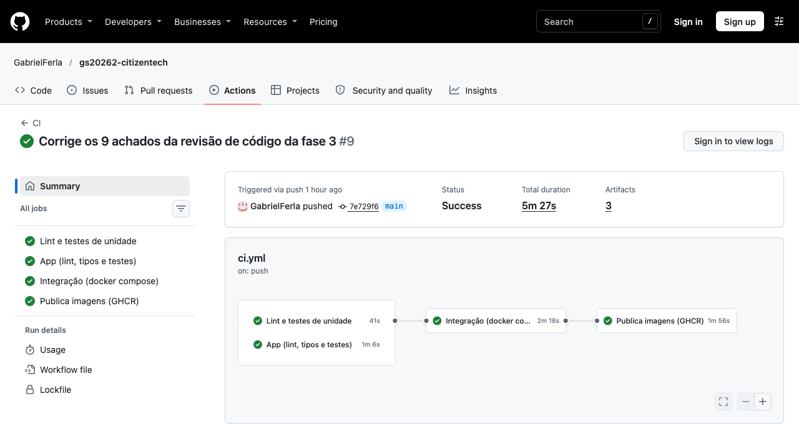
Execução #9 do CI, no commit 7e729f6: lint e testes de unidade, app (lint, tipos e testes), integração com docker compose e publicação das imagens, todos verdes, em 5 min 27 s.
8.3 Segurança: 12 práticas
#
Prática
Como
Evidência
1
Autenticação no broker MQTT
Sem acesso anônimo; uma senha por serviço, gerada do .env
CT-05
2
Autorização por tópico (ACL)
O simulador só publica em sim/, a ponte só em wokwi/, o ingestor só lê
CT-06
3
Validação de entrada
JSON Schema, sensor cadastrado, origem, unidade, faixa, horário e tamanho máximo de 4 KB; o rejeitado fica auditado
CT-03, CT-04, CT-23
4
Menor privilégio no banco
O ingestor não apaga; o dashboard e a IA só leem o gold
CT-07, CT-08, CT-33
5
Segredos fora do código
Senhas só no .env, fora do git
revisão do repositório
6
Integridade do que vem da internet
Assinatura HMAC-SHA256, lista de sensores, seq crescente, janela de 2 min e 1 mensagem/s
CT-19, CT-20, CT-26
7
Contenção
O que vem do Wokwi só alimenta a estação de demonstração; nunca dispara alerta de rio real
CT-04
8
Containers sem root
Ingestor, simulador e IA rodam como usuário app; o app web roda no nginx sem root
docker compose exec api id
9
Rede fechada
Banco, broker, API e app só aceitam conexões da própria máquina (127.0.0.1)
CT-28
10
Resiliência a entrada maliciosa
Nenhuma mensagem derruba o ingestor ou a ponte; a leitura só é confirmada ao broker depois de gravada
CT-23, CT-24
11
API com entrada validada
Tipos e faixas validados; 404 e 422 claros; 503 sem vazar detalhes quando o banco cai; CORS restrito
CT-40, CT-42
12
Cabeçalhos de segurança no app
CSP só do próprio endereço e sem script inline, nosniff, proteção contra clickjacking e no-referrer
CT-54
Proteção de dados (LGPD). O sistema não coleta dado pessoal: não há login nem cadastro, e as leituras são de rios e contagens anônimas.
A localização do cidadão nunca sai do celular: a API só recebe o bairro, e com o GPS o app calcula a distância no aparelho. A posição não entra em URL nem é gravada (CT-41, CT-57).
8.4 Plano de testes e evidências
O plano completo tem 70 casos (CT-01 a CT-70), cada um com requisito, passos, resultado esperado, obtido e o teste automatizado que o cobre: area4-devops/plano-de-testes.md.
Tipo
Ferramenta
Testes
Resultado em 09/11/2026
Unidade
pytest
278
278 passaram
Integração (broker, banco, API e app reais no Compose)
pytest
24
24 passaram
App (unidade e telas)
Jest e Testing Library
116
116 passaram
Lint e tipos
ruff, ESLint e TypeScript
—
sem problemas
Casos de teste selecionados
ID
Requisito
Resultado esperado
Obtido
CT-01
Leitura válida chega ao banco
1 linha em silver.leitura em até 15 s
ok
CT-02
Não duplicar reentregas do QoS 1
1 linha no bronze e 1 no silver
ok
CT-03
Rejeitar dado fora do contrato
Bronze com status rejeitada e motivo; nada no silver
ok
CT-05
Broker exige autenticação
Conexão anônima recusada
ok
CT-09
Alerta abre, escala e fecha uma vez
1 alerta, pico certo, fechado
ok
CT-22
Projeto roda só com o README
Clone limpo: todos os serviços saudáveis e dados no gold
ok
CT-24
Nenhuma leitura perdida se o banco cair
Postgres desligado por 20 s: 40 leituras gravadas, nenhuma perdida
ok
CT-31
Recomendação só traz abrigo apto
Com vaga agora e na chegada, fora de área de risco com alerta
ok
CT-34
Mensagem em linguagem simples
SMS de até 160 caracteres, sem acento e com 199; verificação sem problemas
ok
CT-35
IA melhor que a regra simples
Erro menor no Guaíba e no Gravataí e alerta antes da cota
Guaíba −71%
CT-46
ESP32 publica e a ponte repassa
Leituras do Wokwi aceitas no bronze e gravadas no silver
150 aceitas
CT-57
A posição não sai do aparelho
Só GET /abrigos?pessoas=; nenhuma URL com latitude ou longitude
ok
CT-59
API fora do ar: aviso amigável
Últimos dados com a hora; o app volta sozinho
ok
CT-62
Alerta antecipado no app antes da cota
Selo e aviso antes de o rio passar da cota
50 s e 31 s antes
CT-63
Fluxo completo até "Como chegar"
Recomendados do bairro, detalhe e mapa só com o destino
ok
Execução dos testes em 11/11/2026
$ .venv/bin/python -m ruff check . && .venv/bin/python -m pytest -q
All checks passed!
278 passed, 24 deselected in 3.23s
$ cd area3-mvp/app && npx jest
Test Suites: 12 passed, 12 total
Tests: 116 passed, 116 total
$ docker compose --profile ferramentas run --rm --build testes
testes/test_integracao.py::test_it23_app_web_no_ar_e_api_pelo_proxy PASSED [ 95%]
testes/test_integracao.py::test_it24_situacao_atual_acha_a_ultima_leitura_pela_chave_sem_varrer_tudo PASSED [100%]
---------------- generated xml file: /relatorios/integracao.xml ----------------
============================== 24 passed in 8.16s ==============================
Os relatórios JUnit ficam em relatorios/ e o CI guarda os mesmos relatórios como artefatos de cada execução.
9. Uso de IA generativa, como rodar e limitações
Uso de IA generativa (declaração exigida pelo edital)
Ferramenta
Para quê
Claude (Anthropic), via Claude Code
Fase 1: pesquisa de versões e limitações (Wokwi, Mosquitto 2, PostgreSQL 18), desenho da arquitetura, código, testes e documentação, calibração do simulador.
Claude (Anthropic), via Claude Code
Fase 2: desenho do treino sem vazamento e da métrica antes e depois, código da IA e da API, prompt de sistema das mensagens.
Claude (Anthropic), via Claude Code
Fase 3: versões do Expo SDK 58, desenho das telas e do fluxo, código do app e dos testes, cálculo da distância no aparelho com teste de paridade, Dockerfile e nginx, roteiro da demonstração e prints. Também a montagem deste PDF.
A solução não chama nenhuma IA generativa em execução: as mensagens saem de modelos de texto que seguem o prompt documentado.
O grupo revisou, executou e testou todo o código entregue e consegue explicar cada parte.
Como rodar
Só precisa do Docker Desktop aberto (Windows, macOS ou Linux). O passo a passo completo está no README.md.
cp .env.example .env (no Windows: Copy-Item .env.example .env)
docker compose up -d --build --wait (na primeira vez, de 3 a 5 minutos)
App do cidadão: http://localhost:5173 (de preferência em largura de celular)
API de IA: http://localhost:8000/docs
Demonstração: docker compose restart simulador (a cheia chega em cerca de 4 minutos)
Limitações conhecidas
Os dados são simulados. As cotas, a zona de risco e a capacidade dos abrigos (150 pessoas por escola, 300 por ginásio) são estimativas documentadas.
O app foi testado no navegador. O código cobre o celular, mas o Expo Go das lojas ainda não roda o SDK 58 e a API só aceita conexões da própria máquina.
O aviso de alerta funciona com o app aberto (consulta a cada 3 s). Push com o app fechado exigiria um servidor de push.
O MQTT local não usa TLS e as senhas de exemplo são de desenvolvimento. Num ambiente real, o broker teria TLS e as senhas ficariam num cofre.
A chave HMAC do Wokwi é de demonstração, porque o projeto no Wokwi é público.